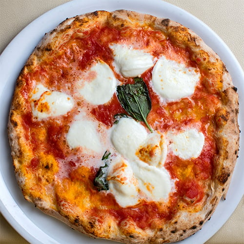
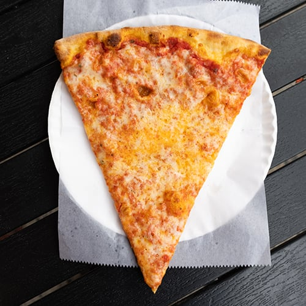
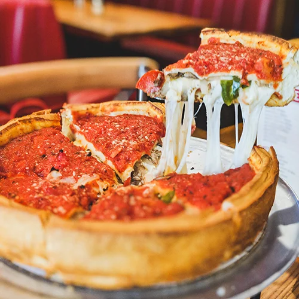
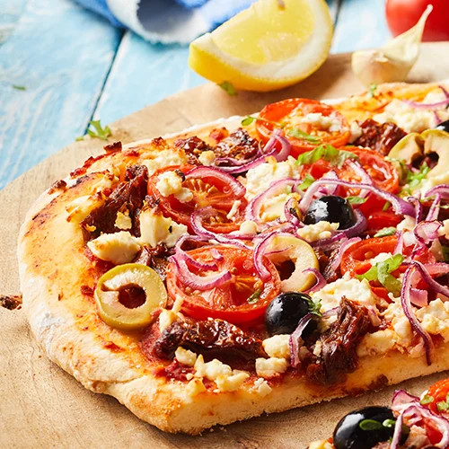
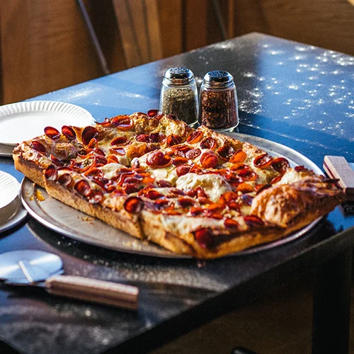
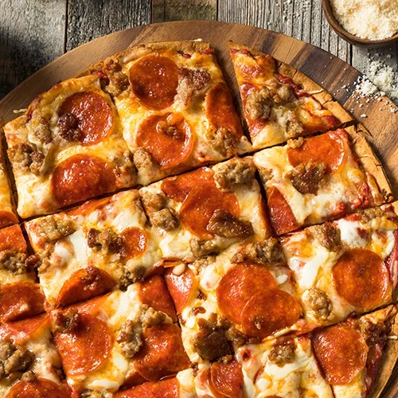

Pizza Haven, we believe every slice tells a story. Our dough is made fresh daily, hand-tossed to perfection, and baked in stone ovens for that irresistible crisp. We source the finest ingredients—from vine-ripened tomatoes and creamy mozzarella to locally grown vegetables and premium meats. Whether you crave a classic Margherita, a hearty Meat Lovers, or a gourmet creation topped with truffle oil and arugula, we’ve got something to satisfy every palate. Pair your pizza with our handcrafted sides, refreshing drinks, and indulgent desserts for the perfect meal. Warm, inviting, and family-friendly, Pizza Haven is more than just a restaurant—it’s a place to gather, celebrate, and enjoy the simple joy of sharing good food.
Our Products
Neapolitan Style Pizza

Neapolitan is the original pizza. This delicious pie dates all the way back to the 18th century in Naples, Italy. During this time, the poorer citizens of this seaside city frequently purchased food that was cheap and could be eaten quickly. Luckily for them, Neapolitan pizza was affordable and readily available through numerous street vendors.
€13.90
New York Style Pizza

With its characteristic large, foldable slices and crispy outer crust, New York pizza is one of America’s most famous regional pizza types. Originally a variation of Neapolitan pizza, the New York slice has taken on fame all its own, with some saying its unique flavor has to do with the minerals present in New York’s tap water supply.
€11.10
Chicago Style Pizza

Chicago pizza, also called deep-dish pizza, gets its name from the city it was invented in. During the early 1900s, Italian immigrants in the windy city were searching for something similar to the Neapolitan pizza that they knew and loved. Instead of imitating the notoriously thin pie, Ike Sewell had something else in mind. He created a pizza with a thick crust that had raised edges, similar to a pie, and ingredients in reverse, with slices of mozzarella lining the dough followed by meat and vegetables, and then topped with a can of crushed tomatoes.
€21.20
Greek Style Pizza

Greek pizza was created by Greek immigrants who came to America and were introduced to Italian pizza. Greek pizza, trendy in the New England states, features a thick and chewy crust cooked in shallow, oiled pans, resulting in a nearly deep-fried bottom. While this style has a crust that is puffier and chewier than thin crust pizzas, it’s not quite as thick as a deep-dish or Sicilian crust..
€18.10
Sicilian Style Pizza

Sicilian pizza, also known as "sfincione," provides a thick cut of pizza with pillowy dough, a crunchy crust, and robust tomato sauce. This square-cut pizza is served with or without cheese, and often with the cheese underneath the sauce to prevent the pie from becoming soggy. Sicilian pizza was brought to America in the 19th century by Sicilian immigrants and became popular in the United States after the Second World War.
€10.30
St. Louis Style Pizza

Looking for a light slice? St. Louis pizza features a thin crust with a cracker-like consistency that is made without yeast. Due to the crispy crust, St. Louis pizza is usually cut into 3- or 4-inch rectangles, known as "party" or "tavern" cut. This pizza features Provel processed cheese, which is a gooey combination of cheddar, Swiss, and provolone cheeses. St. Louis received an influx of Italian immigrants in the 19th century who were looking for employment opportunities. The Italian community, largely from Milan and Sicily, created the St. Louis pizza. Its sweet sauce is reminiscent of the Sicilian influence.
€17.90